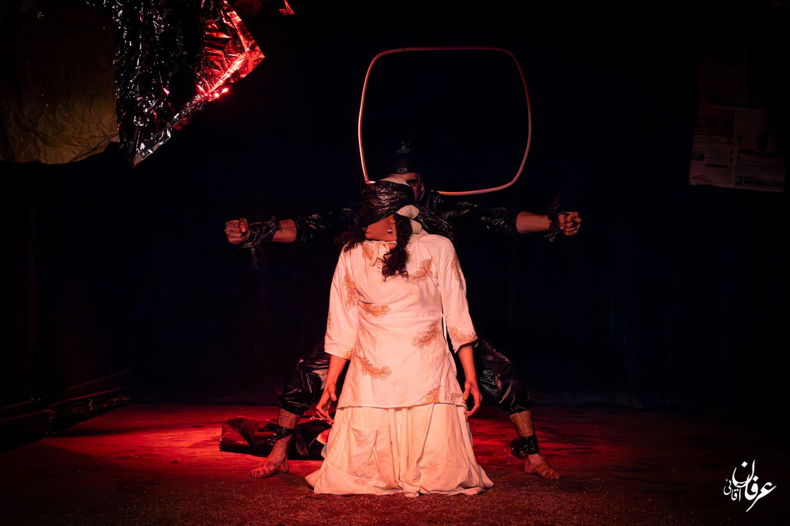
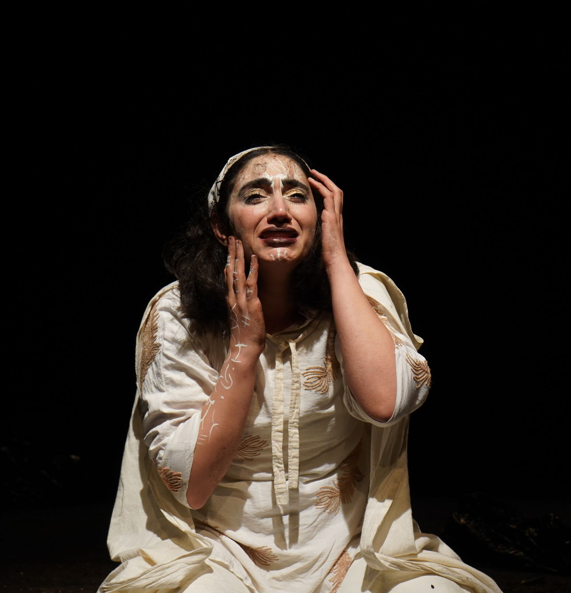
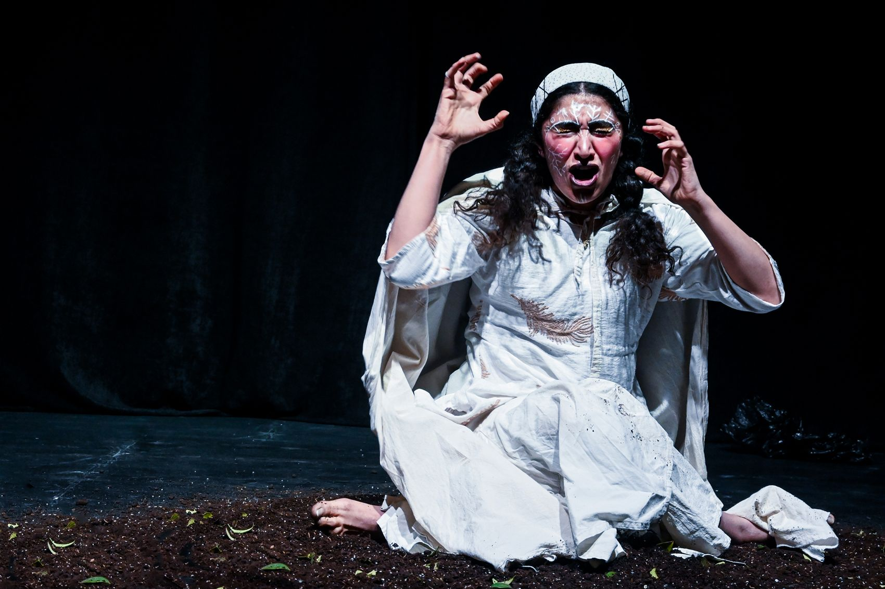
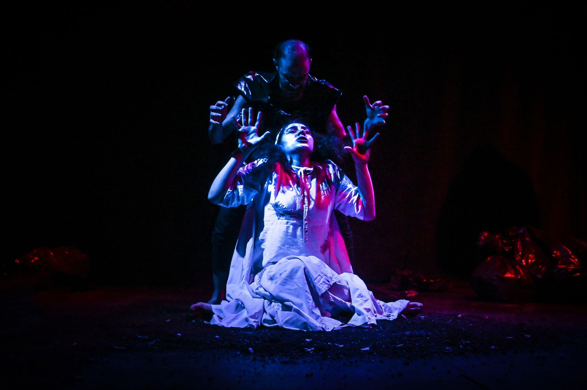
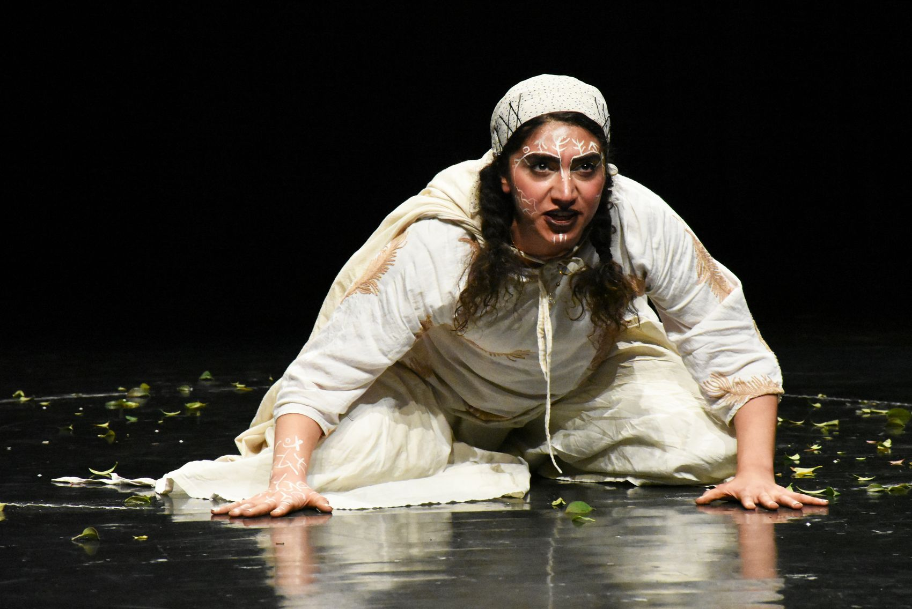
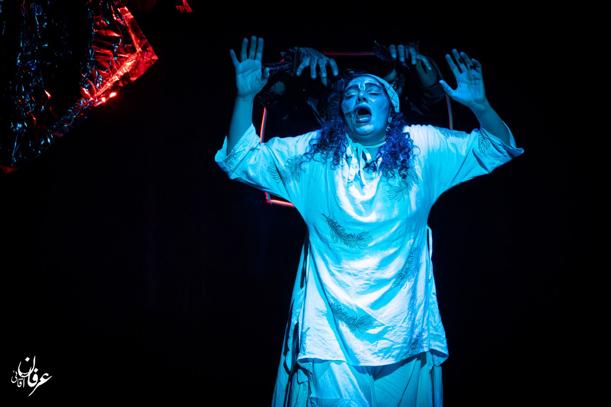
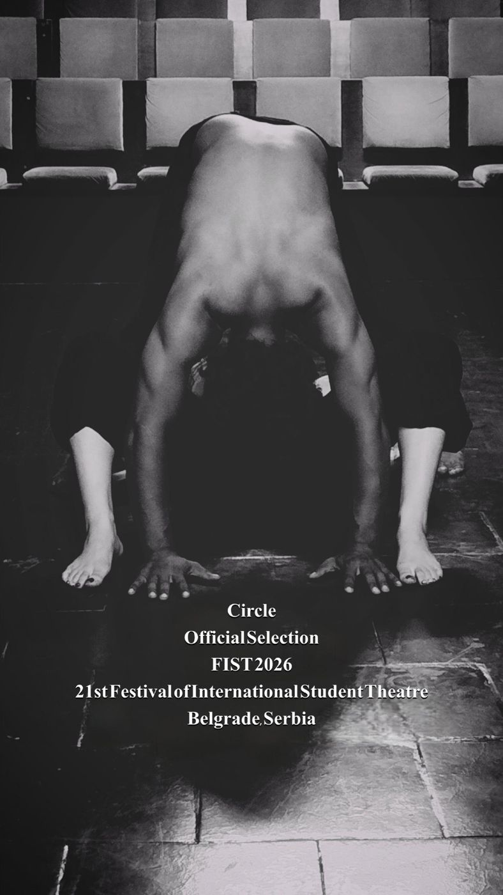

فارسی
EN
TR
عربی
0%


i
ii
iii

Costume & make-up

The black figure

Soil & leaves

Light
Workshop
parastumohafezatkar.art@gmail.com
+98 901 131 9876

Yannis Didaskalou
Saša Sinđelić
Miryam Falterer
Ula Talija Pollak
Onur Kurtulmuş
Janko Kovačević
Mateja Đorđević
Sofija Nađa Stanić
Anđela Jovanović
Tijana Matić